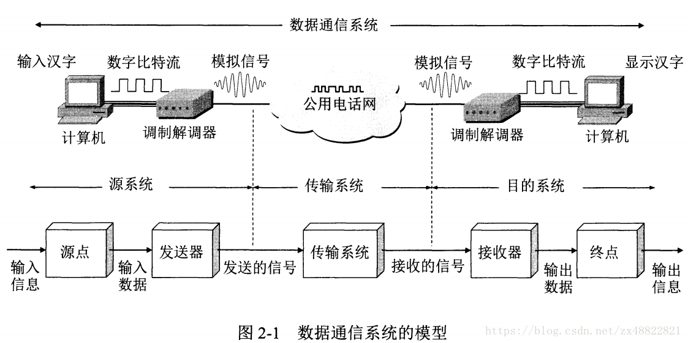
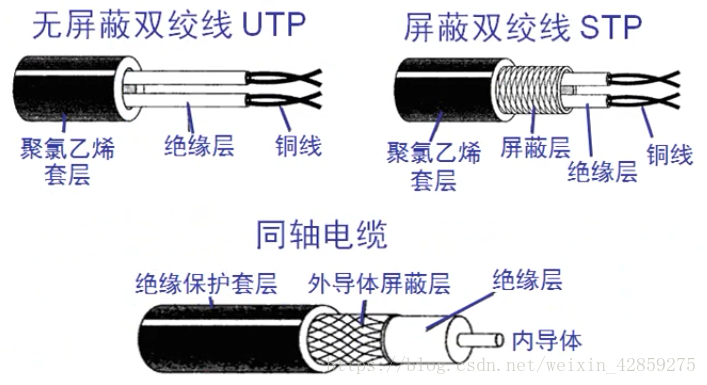
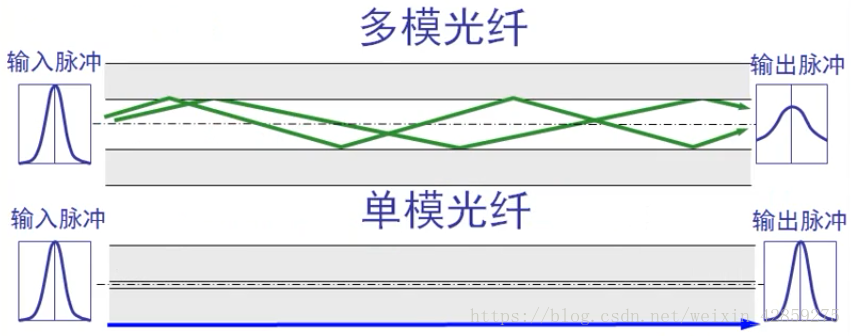
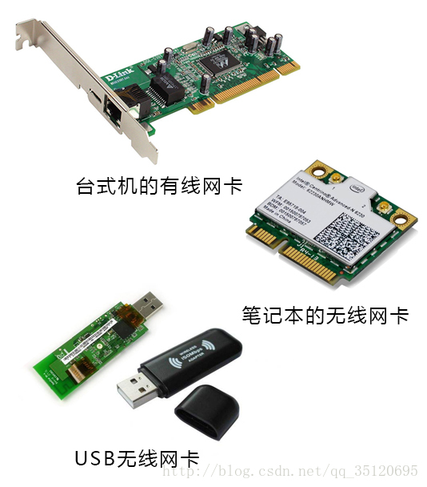
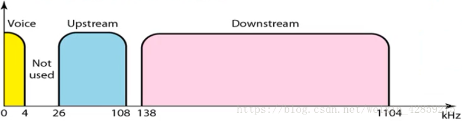
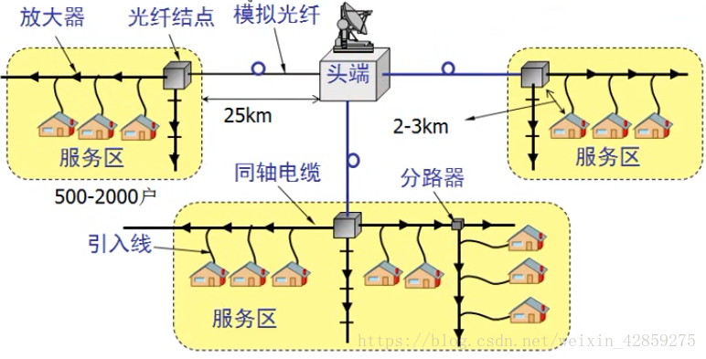

网络传输介质：—–物理层
物理层基本概念
物理层解决如何在连接各种计算机的传输媒体上传输数据比特流，而不是指具体的传输媒体。该层次的主要任务是：确定传输媒体的接口的一些特性，包括：
- 机械特性：接口的形状，大小，引线的数目
电气特性：规定电压范围（-5V到+5V）
功能特性：规定-5V代表0，+5V代表1
过程特性：也称规程特性，规定建立连接时各个相关部件的工作步骤
- 机械特性：接口的形状，大小，引线的数目
数据通信的基础知识
数据通信系统的模型
如图所示，一个数据通信系统可划分为三大部分，即源系统(或发送端、发送方)、传输系统(或传输网络)和目的系统(或接收端、接收方)。

通信的目的是传送消息(message)。如话音、文字、图像、视频等都是消息。数据(data)是运送消息的实体。根据RFC 4949给出的定义，数据是使用特定方式表示的信息，通常是有意义的符号序列。这种信息的表示可用计算机或其他机器(或人)处理或产生。信号(signal)则是数据的电气或电磁的表现。
根据信号中代表消息的参数的取值方式不同，信号可分为以下两大类：
- 模拟信号，或连续信号—代表消息的参数的取值是连续的。例如在图中，用户家中的调制解调器到电话端局之间的用户线上传送的就是模拟信号。
- 数字信号，或离散信号—代表消息的参数的取值是离散的。例如在图中，用户家中的计算机到调制解调器之间，或在电话网中继线上传送的就是数字信号。在使用时间域(或简称为时域)的波形表示数字信号时，代表不同离散数值的基本波形就称为码元。在使用二进制编码时，只有两种不同的码元，一种代表0状态而另一种代表1状态。
关于信道的概念
- 信道一般指的就是发送消息的传输媒体。
- 单工通信：只能一方发送数据，一方接受数据（广播）。
- 半双工通信：双方都可以接受数据，发送数据，但是不能同时进行（对讲机）。
- 双工通信：双方可以同时接受数据和发送数据（打电话）。
- 信道一般指的就是发送消息的传输媒体。
物理层的传输媒体
导向传输媒体
- 双绞线：屏蔽双绞线，无屏蔽双绞线
- 同轴电缆：50Ω用于数字传输，多用于基带传输，也叫基带同轴电缆，70Ω用于模拟传输，即宽带同轴电缆。
- 光缆：单模光纤只能传输一种电磁波，多模光纤能传输多种电磁波。
- 
- 
非导向传输媒体
- 短波通信：靠电离层反射，通信质量一般比较差。
- 微波通信：主要是直线传播（地面微波接力通信、卫星通信）
物理层设备
网卡
- 在网卡是工作在底层的，准确来说应该是工作在OSI的物理层和数据链路层（网卡驱动）也就是TCP/IP的网络接口层
- 作用：是连接计算机与网络的硬件设备，不仅能实现与局域网传输介质之间的物理连接和电信号匹配，还涉及帧的发送与接收、帧的封装与拆封、介质访问控制、数据的编码与解码以及数据缓存的功能等
- 
中继器
- 局域网上所有节点的中心，它的作用是放大信号，补偿信号衰减，支持远距离的通信
集线器
- 多接口的中继器,可以连接多台设备，一般有4、8、16、24、32等数量的接口。
- 提供信号放大和中转的功能，它把一个端口接收的所有信号向所有端口分发处处，一些集线器在分发之前将罗信号加强支护重新发出，一些集线器则排列信号的时序以提供所有的二端口间的同步数据通信
中继器、集成器的区别
中继器与集线器的区别在于连接设备的线缆的数量。一个中继器通常只有两个端口，而一个集线器通常有 4 至 20 个或更多的端口。
数字传输系统
广域网之间的数据传输。
脉码调制PCM体制最近是为了在电话局之间的中继线上传送多路的电话。
局域网的标准- 北美的24路PCM（简称T1） 速率：1.544MB/s
- 欧洲的30路PCM（简称E1） 速率：2.048MB/s
我国采用的是E1标准。
宽带接入技术
ADSL技术
非对称数字用户线，指的是，将电话通信放入低频信道，网络上的上传放在中频的上行信道，下载放在高频的下行信道，非对称指的就是中频的频率范围和高频的频率范围不是1:1的。

HFC技术
光纤同轴混合网，为了提高传输的可靠性和信号的质量，HFC将原来的同轴电缆的主干部分换成了光纤。光纤从头端连接到光纤结点，光信号转换成电信号，通过同轴电缆将电信号传输到各家各户中。为了能使电视机能够接受到数字电视信号，还需要机顶盒连接在电视个同轴电缆之间。在电脑和机顶盒之间连接一个调制解调器就能上网了。

FTTx技术
光纤到户技术，运营商拉一根光纤到指定用户家中，在用户家中光信号转化成电信号，提高上网速率。